A turn-based, grid-based war game in the Advance Wars tradition. If you know that genre you already know the basics: move, attack, capture, build. What is new is everything around it: you can't see the whole map, your army has morale, supply can be cut, and the map itself can be changed.
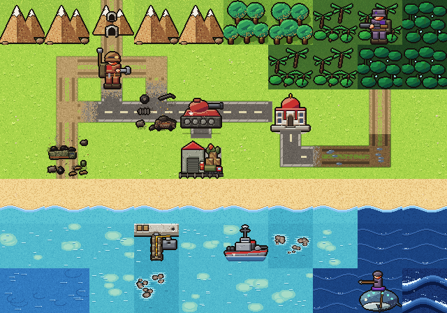
The game's own art, from the current build.
Seven things set Ember & Ash apart from Advance Wars. Skim these first, and follow the links when you want the detail.
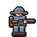
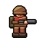
Fog of war hides the enemy. Forests, hills and ruins hide infantry. Some units can't be seen at all until they strike.
Fog and stealth →One army-wide meter. Win fights and it rises. Lose units and it falls, and a broken army routs and can surrender.
Morale →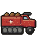
Buildings and transports carry supply. Cut a link and the units beyond it run low on fuel and ammo.
Supply →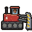
Clear forest, burn it, bore tunnels through mountains. Ruins and wreckage pile up where you've fought.
Shaping the map →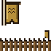
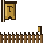
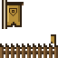
Small settlements with their own garrisons. Court them for benefits, or conquer them and pay the price.
Factions →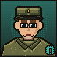
Before the match you secretly pick a council of two Specialists. They give your army perks, and the enemy only learns them through play and spying.
Specialists →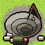
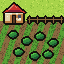
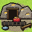
Five materiel piles (Food, Building, Weapon, Supply, Valuables) are needed for units, construction and deals.
Economy →The goal. Be the last player standing. A player is eliminated when their HQ is captured or destroyed, they yield, or they have no units and no way to build one.
A turn. You play your whole turn, then the next player plays theirs. Move, attack, capture, build at your production buildings, and answer any cards that arrive. Most units can move and then attack in one turn. Indirect fire (Mortars, Artillery, LORAS and similar) can't.
Open the playtest build. The build number shows on the title screen; please include it in any feedback.
The web build is hotseat: two players share one device. Online play and a computer opponent are planned.
Every unit has 10 HP. Damage = 9 × Attack ÷ (Attack + Defense + cover), never less than 1. Cover adds to the defender's Defense, so ground you hold matters.
Tank: Attack 7. Regulars: Defense 4. Same shot, two different tiles.
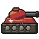
TankCounter-attacks. A defender fires back only when the attack is at range 1 and its own weapon reaches range 1. Indirect units never counter, so Artillery and Snipers can hit from out of reach.
Collateral. Hitting a unit inside a building also damages the building. A building's cover falls as it is damaged, and at 0 HP it becomes Ruins.
Healing. A Medic or Engineer restores 2 HP per action. A friendly unit on a building you own heals 2 HP each turn.
Only infantry-class units capture (not Engineers or Medics). Each turn you stay adds your current HP to the building's progress, against a threshold: Village 20, Town 30, City 40, others 20.
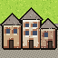
10/30One army-wide meter, 0 to 100, starting at 50. Destroying units and capturing buildings raises it. Losing units and buildings lowers it, and units cut off from supply drag it down. Only your own meter is shown to you.
Morale from fighting changes at most 10 points per round.
Units gain ranks (V1 to V3) from fighting. Veterans hit harder, but losing one costs more morale: ×1.25 at V1, ×1.5 at V2, ×2 at V3.
You see only what your units can see. Every tile is in one of four states:
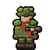
Forest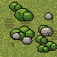
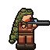
Scrub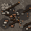
Ruins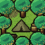
CampSupply radiates from buildings you own: the HQ furthest, then Cities and Depots, then other buildings. Transport vehicles, Transport Copters, Hercules and Barges act as connectors that carry it further. Range is counted in steps around obstacles, not in a straight line, and can't pass through Mountains, Deep Forest or water.
Cash comes from captured buildings. Five materiel piles sit alongside it, each capped at 200: Food (farms, fish farms), Building (quarries, lumber yards, iron mines), Weapon (chemical labs), Supply (depots, oil rigs, ammo factories, field hospitals) and Valuables (gold mines). Each owned site makes 10 a turn, scaled by its health, and many units cost materiel as well as Cash.
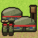
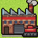
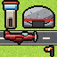
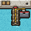
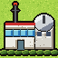
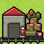
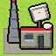
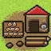
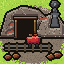
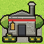
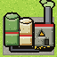
Production and resource buildings are never built by players. They start on the map, neutral or faction-held, so they are worth fighting over. Engineers can rebuild a ruined one. Research Labs unlock Late-Game units for a one-time fee.
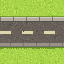
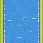
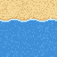
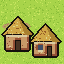
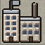
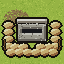
| Terrain | Cover | Foot | Light | Medium | Heavy |
|---|---|---|---|---|---|
| Plains | 0 | 1 | 1 | 1 | 1 |
| Road | 0 | 1 | 1 | 1 | 1 |
| Track | 0 | 1 | 1 | 1 | 1 |
| Tunnel | 0 | 1 | 1 | 1 | 1 |
| Scrubland | 1 | 1 | 2 | 2 | 2 |
| Forest / Jungle | 2 | 2 | 2 | 3 | — |
| Deep Forest / Jungle | 3 | 2 | — | — | — |
| Hills | 2 | 2 | 2 | 2 | 2 |
| Mountains | 4 | 3 | — | — | — |
| River | 1 | 1 | — | — | — |
| Village | 3 | 1 | 2 | 2 | 2 |
| Town | 4 | 1 | 2 | 2 | 2 |
| City | 5 | 1 | 2 | 2 | 2 |
| Fort / Field Fortification | 4 | 1 | 1 | 1 | 1 |
| Camp | 3 | 1 | 1 | 1 | 1 |
| Ruins | 1 | 1 | 2 | 2 | 2 |
Numbers are movement costs; a dash means the unit can't enter. Wreckage adds +1 to a tile's cost.
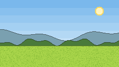
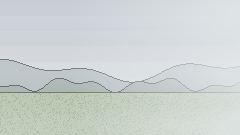
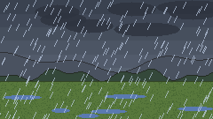
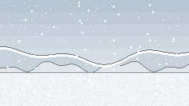
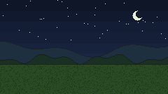
Spells last 1 to 3 rounds, and a forecast chip warns one round ahead.
Every unit has 10 HP. Stats here are a snapshot, since the numbers are still being tuned. Ranges of 2 or more are indirect: no counter-attacks, and no moving and firing in one turn.
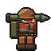
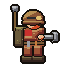
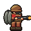
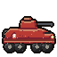
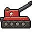
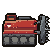
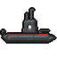
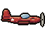
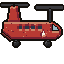
The Infiltrator and Leviathan have no art of their own yet (they borrow the Regulars and Submarine sprites).
| Unit | Role | Move | Sight | Atk | Range | Def |
|---|---|---|---|---|---|---|
| Regulars | Standard infantry | 3 | 3 | 5 | 1 | 4 |
| Assault | Heavy infantry | 2 | 2 | 7 | 1 | 5 |
| Mortars | Indirect fire | 3 | 2 | 6 | 2-3 | 2 |
| Snipers | Recon & anti-infantry | 3 | 6 | 6 | 1-3 | 2 |
| Engineer | Support (non-combat) | 2 | 2 | 0 | — | 2 |
| Medic | Support (non-combat) | 2 | 2 | 0 | — | 1 |
| Sherpa | Support (supply, non-combat) | 2 | 2 | 0 | — | 1 |
| Flamethrower | Special infantry | 3 | 2 | 6 | 1 | 3 |
| Mounted Infantry | Special infantry | 5 | 3 | 5 | 1 | 3 |
| Guerrillas | Special infantry | 3 | 3 | 6 | 1 | 3 |
| Ballista Crew | Non-mechanical indirect fire | 3 | 2 | 6 | 2-3 | 2 |
| Marines | Amphibious infantry | 3 | 3 | 6 | 1 | 4 |
| Exo-Trooper | Mobile light-medium armor infantry | 4 | 3 | 6 | 1 | 6 |
| Infiltrator Late-Game | Spy and saboteur (disguised infantry) | 4 | 3 | 3 | 1 | 2 |
| Unit | Role | Move | Sight | Atk | Range | Def |
|---|---|---|---|---|---|---|
| Recon/ATV | Fast recon | 8 | 6 | 3 | 1 | 3 |
| Transport | Personnel & resupply | 6 | 2 | 0 | — | 3 |
| APC | Light armoured carrier | 6 | 3 | 3 | 1 | 5 |
| Wader | Amphibious transport/light combat | 6 | 3 | 4 | 1 | 4 |
| Tank | Standard armour | 5 | 3 | 7 | 1 | 7 |
| Flak Cannon | Air & ground defence | 5 | 3 | 7 | 1-2 air, 1 ground | 5 |
| Artillery | Indirect fire | 4 | 2 | 8 | 3-4 | 4 |
| Radar | Mobile recon (non-combat) | 5 | 6 | 0 | — | 3 |
| Jammer | Electronic countermeasures (non-combat) | 4 | 2 | 0 | — | 3 |
| Unit | Role | Move | Sight | Atk | Range | Def |
|---|---|---|---|---|---|---|
| Ubertank | Heavy armour | 4 | 3 | 9 | 1 | 9 |
| Rail Tank Late-Game | Heavy armour + energy weapon | 4 | 3 | 9 | 1 | 8 |
| SAMs | Air defence | 4 | 3 | 8 | 3-5 | 4 |
| LORAS | Heavy indirect fire | 3 | 2 | 10 | 5-7 | 4 |
| Clearer | Industrial | 4 | 2 | 0 | — | 3 |
| Tunneller | Industrial | 4 | 2 | 0 | — | 3 |
| Unit | Role | Move | Sight | Atk | Range | Def |
|---|---|---|---|---|---|---|
| Skimmer | Fast recon boat | 8 | 6 | 3 | 1 | 3 |
| Gunboat | Small warship | 6 | 3 | 5 | 1-2 | 4 |
| Barge | Transport boat | 5 | 2 | 0 | — | 3 |
| Frigate | Medium warship | 5 | 3 | 7 | 1-3 | 6 |
| Destroyer | Large warship | 4 | 4 | 8 | 2-5 | 8 |
| Submarine | Stealth unit | 5 | 2 | 8 | 1-2 | 5 |
| Corvette | Anti-submarine warfare | 6 | 3 | 6 | 1-2 | 5 |
| Tidelamar Riders | Amphibious combat mount (stealth + ramming) | 5 | 3 | 7 | 1 | 6 |
| Leviathan Late-Game | Hidden long-range missile striker | 4 | 2 | 8 | 4-6 | 5 |
| Unit | Role | Move | Sight | Atk | Range | Def |
|---|---|---|---|---|---|---|
| Glider / Obs Balloon | Recon | 6 | 6 | 0 | — | 1 |
| Gun Copter | Light air attack | 6 | 3 | 6 | 1 | 4 |
| Transport Copter | Air transport | 6 | 3 | 0 | — | 3 |
| Fighter Plane | Air combat | 8 | 5 | 7 | 1 | 5 |
| Bomber | Medium bomber | 6 | 3 | 8 | 1 | 4 |
| Flying Fortress Late-Game | Heavy bomber | 5 | 4 | 9 | 1-2 | 7 |
| Hercules | Heavy transport | 5 | 3 | 0 | — | 4 |
| Phantom Late-Game | Stealth air unit | 7 | 4 | 7 | 1-2 | 4 |
| Skylamar Riders | Airborne skirmisher (hybrid air-ground) | 6 | 4 | 5 | 1 | 3 |
Late-Game units need a Research Lab unlock.
Some maps have neutral factions: settlements with a garrison and militia. They won't take sides unless you court them. A faction's favour with you runs from Hostile to Allied on one bar on its sheet.
When one of your units ends a turn within 2 tiles of a faction, a Contact card arrives. You choose:
You can also attack a faction. Conquering costs morale and favour everywhere, and razing a settlement to Ruins spawns guerrilla cells. Factions are meant to be a choice, never a requirement.
The map isn't fixed. Some units reshape it.
Fire has no final art yet; in the build it shows as a colour wash.
What a unit sees inside a tunnel. It keeps its usual sight range, but only straight ahead and straight behind. The walls block every other direction until it reaches a mouth tile.
Other special units. The Engineer repairs buildings and bridges, builds Forts, and clears Wreckage. The Infiltrator (Late-Game) walks around disguised as an enemy Regulars or a faction unit until a detector or its own action exposes it. It can Rig, Hijack an empty Transport, Barge or Transport Copter (which blows up after it gets out), or Infiltrate a building for a 50% chance to steal one piece of intel. The Leviathan (Late-Game) is a submerged missile striker, hidden like the Submarine, range 4 to 6.
Before the match each player secretly picks a council of two Specialists from 18, three in each of six categories. They aren't units on the map: they give your army passive perks and drawbacks. Opponents learn about them only through play, reveals and spies.
What helps most: which unit or system felt too strong or too weak, any moment you didn't understand what happened, and how long a match felt. Include the build number, the map, the round, and what you were trying to do.